InputCalendar의 속성 'calendarValueType'의 설정 값에 따른 기능을 비교하는 예제입니다. 이 속성을 통해 달력의 구성과 입력 필드의 출력 형식을 결정할 수 있습니다.
InputCalendar의 속성 'calendarValueType'의 설정 값에 따른 기능을 비교하는 예제입니다. 이 속성을 통해 달력의 구성과 입력 필드의 출력 형식을 결정할 수 있습니다.
설정 값에 따른 구성은 다음과 같습니다.
yearMonthDate: [default] 입력 필드의 날짜 형식은 'yyyy-MM-dd'이고 달력의 형태는 연도, 월, 일을 선택할 수 있도록 구성됩니다.
yearMonth: 입력 필드의 날짜 형식은 'yyyy-MM'이고 달력의 형태는 연도, 월을 선택할 수 있도록 구성됩니다.
year: 입력 필드의 날짜 형식은 'yyyy'이고 달력의 형태는 연도를 선택할 수 있도록 구성됩니다.
yearMonthDateHour: 입력 필드의 날짜 형식은 'yyyy-MM-dd HH'이고 달력의 형태는 연도, 월, 일, 시를 선택할 수 있도록 구성됩니다.
yearMonthDateTime: 입력 필드의 날짜 형식은 'yyyy-MM-dd HH:mm'이고 달력의 형태는 연도, 월, 일, 시, 분을 선택할 수 있도록 구성됩니다.
yearMonthDateTimeSec: 입력 필드의 날짜 형식은 'yyyy-MM-dd HH:mm:ss'이고 달력의 형태는 연도, 월, 일, 시, 분, 초를 선택할 수 있도록 구성됩니다
속성 'calendarValueType' 설정 값에 따른 달력 유형 비교하기
STEP 1. 초기 상태를 확인합니다.
속성 'calendarValueType'의 설정 값에 따라 InputCalendar가 구성되어있습니다. 각 InputCalendar의 입력 필드에 출력된 문자열과 달력 아이콘을 클릭했을 때 표시되는 달력의 형태를 확인합니다. (예제의 초기 날짜 값에 의해 InputCalenar의 속성 'minYear'의 설정 값이 '1944'로 지정되었습니다. 이 속성의 기본 설정 값은 '1978'입니다.)
그림 1.브라우저(Chrome) 실행 예시
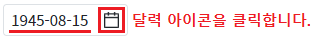
STEP 2. 설정 값 'yearMonthDate' 확인하기
입력 필드에 출력되는 날짜 형식은 'yyyy-MM-dd'이고 달력의 형태는 연도, 월, 일을 선택할 수 있도록 구성됩니다.
그림 2.브라우저(Chrome) 실행 예시 - 설정 값 'yearMonthDate'의 입력 필드
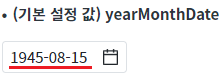
그림 3.브라우저(Chrome) 실행 예시 - 설정 값 'yearMonthDate'의 달력 형태
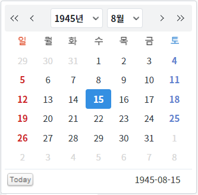
STEP 3. 설정 값 'yearMonth' 확인하기
입력 필드에 출력되는 날짜 형식은 'yyyy-MM'이고 달력의 형태는 연도, 월을 선택할 수 있도록 구성됩니다.
그림 4.브라우저(Chrome) 실행 예시 - 설정 값 'yearMonth'의 입력 필드
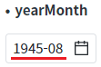
그림 5.브라우저(Chrome) 실행 예시 - 설정 값 'yearMonth'의 달력 형태
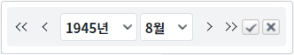
STEP 4. 설정 값 'year' 확인하기
입력 필드에 출력되는 날짜 형식은 'yyyy'이고 달력의 형태는 연도를 선택할 수 있도록 구성됩니다.
그림 6.브라우저(Chrome) 실행 예시 - 설정 값 'year'의 입력 필드
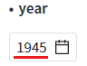
그림 7.브라우저(Chrome) 실행 예시 - 설정 값 'year'의 달력 형태
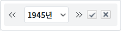
STEP 5. 설정 값 'yearMonthDateHour' 확인하기
입력 필드에 출력되는 날짜 형식은 'yyyy-MM-dd HH'이고 달력의 형태는 연도, 월, 일, 시를 선택할 수 있도록 구성됩니다.
그림 8.브라우저(Chrome) 실행 예시 - 설정 값 'yearMonthDateHour'의 입력 필드
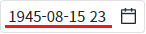
그림 9.브라우저(Chrome) 실행 예시 - 설정 값 'yearMonthDateHour'의 달력 형태
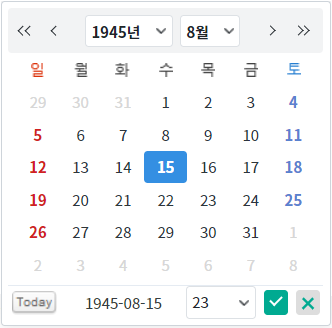
STEP 6. 설정 값 'yearMonthDateTime' 확인하기
입력 필드에 출력되는 날짜 형식은 'yyyy-MM-dd HH:mm'이고 달력의 형태는 연도, 월, 일, 시, 분을 선택할 수 있도록 구성됩니다.
그림 10.브라우저(Chrome) 실행 예시 - 설정 값 'yearMonthDateTime'의 입력 필드
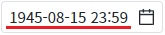
그림 11.브라우저(Chrome) 실행 예시 - 설정 값 'yearMonthDateTime'의 달력 형태
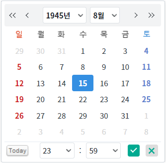
STEP 7. 설정 값 'yearMonthDateTimeSec' 확인하기
입력 필드에 출력되는 날짜 형식은 'yyyy-MM-dd HH:mm:ss'이고 달력의 형태는 연도, 월, 일, 시, 분, 초를 선택할 수 있도록 구성됩니다.
그림 12.브라우저(Chrome) 실행 예시 - 설정 값 'yearMonthDateTimeSec'의 입력 필드
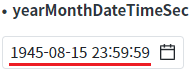
그림 13.브라우저(Chrome) 실행 예시 - 설정 값 'yearMonthDateTimeSec'의 달력 형태
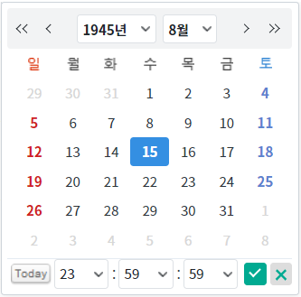
InputCalendar의 속성을 정의합니다.
[필수] calendarValueType="옵션 값"
예시) calendarValueType="yearMonthDate"
(옵션 설명)
- yearMonthDate: [default] 입력 필드의 날짜 형식은 'yyyy-MM-dd'이고 달력의 형태는 연도, 월, 일을 선택할 수 있도록 구성됩니다.
- yearMonth: 입력 필드의 날짜 형식은 'yyyy-MM'이고 달력의 형태는 연도, 월을 선택할 수 있도록 구성됩니다.
- year: 입력 필드의 날짜 형식은 'yyyy'이고 달력의 형태는 연도를 선택할 수 있도록 구성됩니다.
- yearMonthDateHour: 입력 필드의 날짜 형식은 'yyyy-MM-dd HH'이고 달력의 형태는 연도, 월, 일, 시를 선택할 수 있도록 구성됩니다.
- yearMonthDateTime: 입력 필드의 날짜 형식은 'yyyy-MM-dd HH:mm'이고 달력의 형태는 연도, 월, 일, 시, 분을 선택할 수 있도록 구성됩니다.
- yearMonthDateTimeSec: 입력 필드의 날짜 형식은 'yyyy-MM-dd HH:mm:ss'이고 달력의 형태는 연도, 월, 일, 시, 분, 초를 선택할 수 있도록 구성됩니다.
그림 14.웹스퀘어5 SP5 스튜디오의 Property View(속성창) 예시
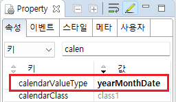
[소스 코드 예시]
<!-- inputCalendar 의 소스 본문 예시 --> <w2:inputCalendar calendarValueType="yearMonthDate"> </w2:inputCalendar>
calendarValueType
[웹스퀘어5 SP5 개발 가이드] InputCalendar
링크 : https://docs1.inswave.com/sp5_user_guide/8df43d1f59fab704#579244ff7483b50c
[웹스퀘어5 SP5 개발 가이드] InputCalendar - 날짜 표시 형식 (calendarValueType)
링크 : https://docs1.inswave.com/sp5_user_guide/8df43d1f59fab704#f97e606858ff9b25